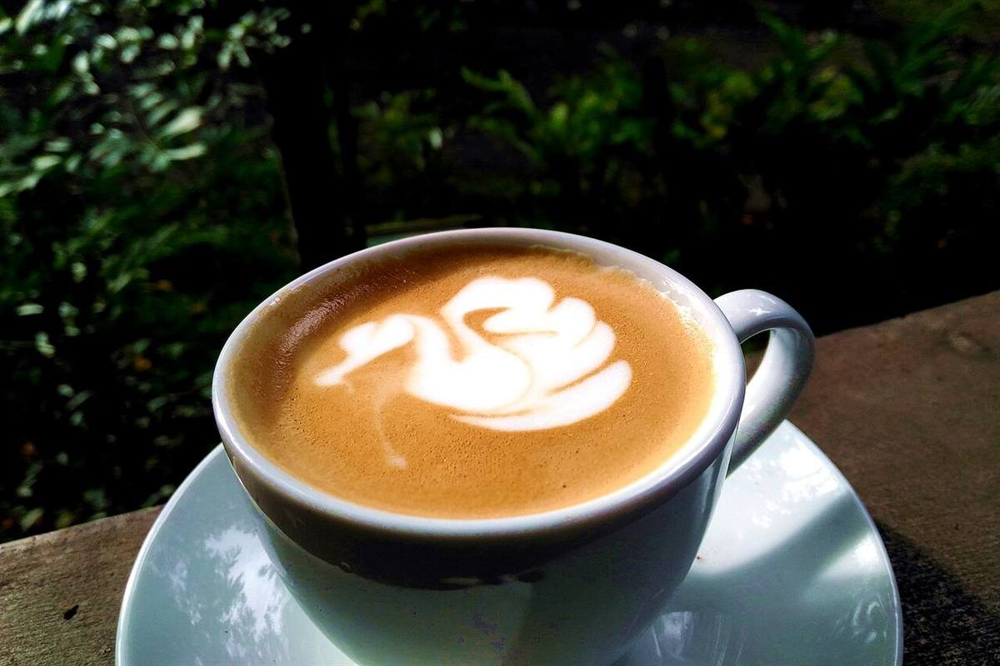
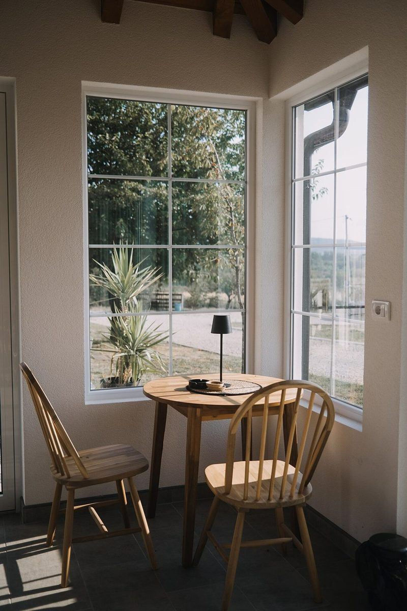
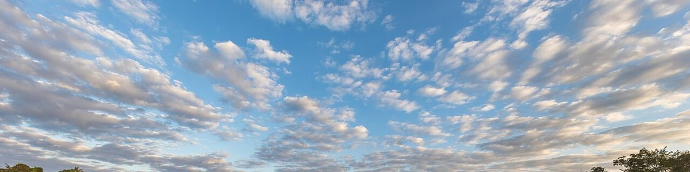

制作側の連想
「テラ」から、単位の接頭辞を思い出した
店名の由来は分かりません。制作側は「テラ」という響きから、ミリ・センチ・キロ・メガ・ギガ・テラと続く単位の接頭辞を連想しました。そこでこのページは、いちばん小さな「ミリ」の粒から、いちばん大きな「テラ」まで、はしごを登るように並べています。制作側の連想で、お店の理念・由来とは無関係です。
10-3m
ミリ(千分の一)— 豆の粒
いちばん小さい段は、粒です。コーヒー豆が一粒ずつ重なる接写を、イメージとして置きました。


10-2c
センチ(百分の一)— カップの直径
両手でつつめる大きさの段。カップの写真を、イメージとして並べています。実際のお店の器ではありません。


1001
一(そのまま)— 窓ひとつ分
単位のつかない段は、ちょうど身の丈。窓や椅子の写真を、イメージとして並べています。


103k
キロ(千倍)— 空の端まで
はしごを登ると、見渡す範囲が一気に広がります。空の写真は国外のもので、三種町の空ではありません。


1012T
テラ(一兆倍)— いまの住所
はしごの一番上は、ここです。確認できているのは次の項目だけで、あとは準備中です。
| 所在地 | 〒018-2104 秋田県山本郡三種町鹿渡勢奈尻95-2 |
|---|---|
| 電話 | なし |
| 営業時間 | 準備中 |
| 定休日 | 準備中 |
| ご予約 | 準備中 |
| 駐車場 | 準備中 |
| SNS | Instagram @terra_cafe_shoanji |